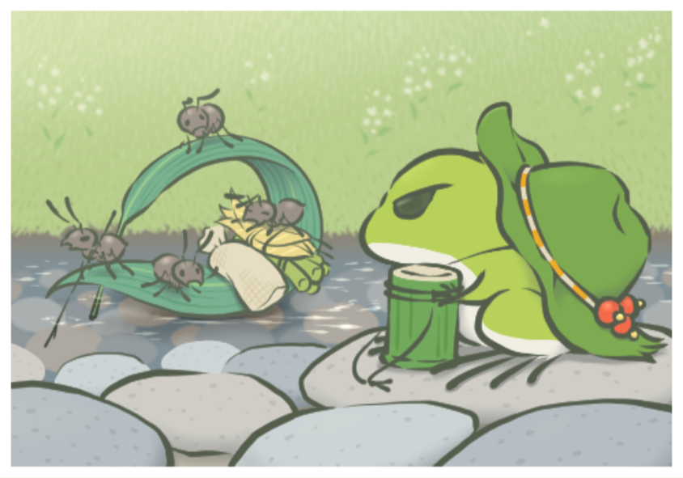

From cats to a frog
A small team at Hit-Point planned and developed Travel Frog as a follow-up to the company’s flagship app, Neko Atsume. Both are low-pressure and non-competitive.

The title
The Japanese title joins tabi (旅, journey) and kaeru (カエル, frog). Kaeru also sounds like the word for returning from a journey (帰る).

Designed to be shared
Several choices were made so people would want to talk about the game online.
Screenshots
hover or tap to flipPlayers can post screenshots directly from within the game.
Different photos
hover or tap to flipEach player may get slightly different pictures from the same destination.
Left to imagine
hover or tap to flipThe frog’s character and destinations were not made clear.
Only hints
hover or tap to flipStore item descriptions are hints, not specific information.